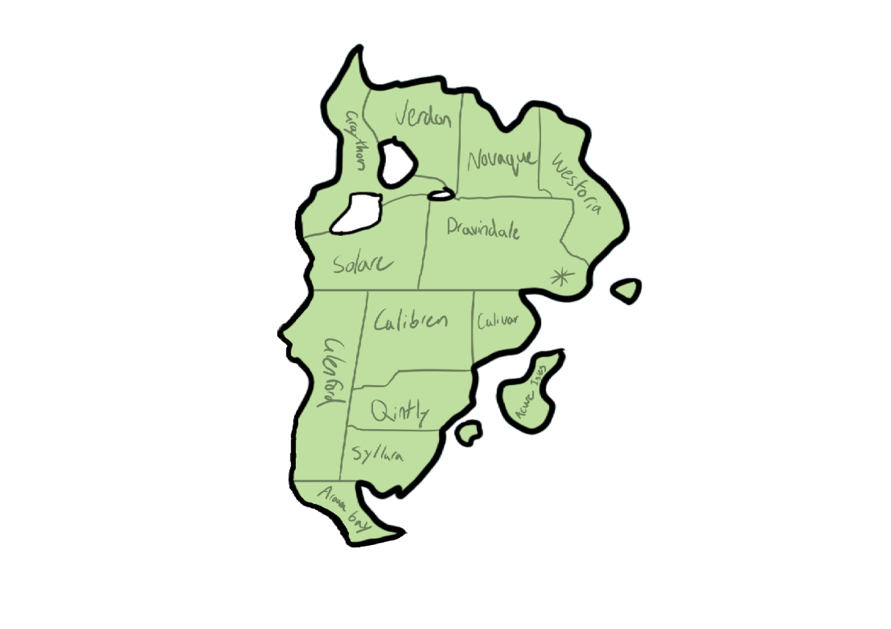

Draxian

Draxian
Draxian is one of the oldest and biggest countries with a long and brutal history. Draxian has the most nuclear weapons and is known for having a strict and powerful military. Draxian has been a participant of all 4 world wars and was on the ‘winning’ side on all. Draxian is more of an entire bustling city instead of smaller cities scattered around. There are small pockets of land for farming and forests enveloped by towering sky scrapers.
States
Aurora Bay
Azure isle
Graythorn
Caibren
Calivor
Dravindale - capital state
Jerdon
Glenfield
Novaque
Solare
Syllara
Westoria
Quintly